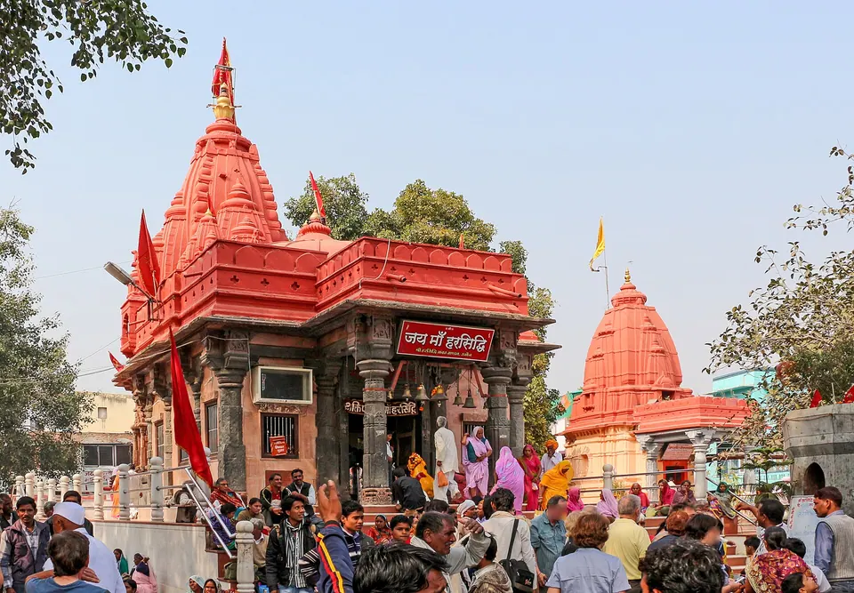
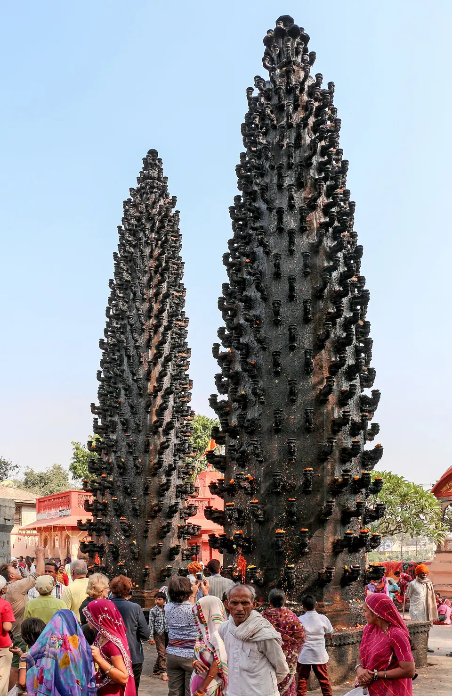
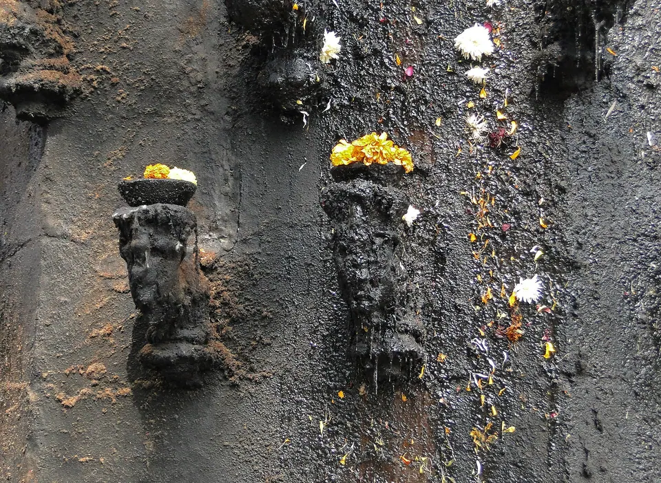
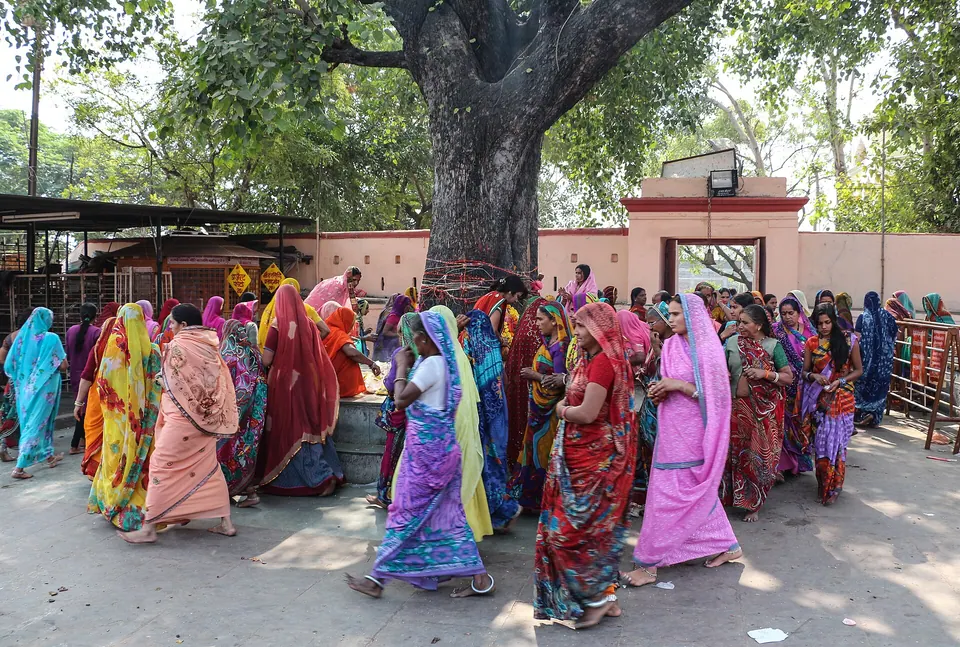
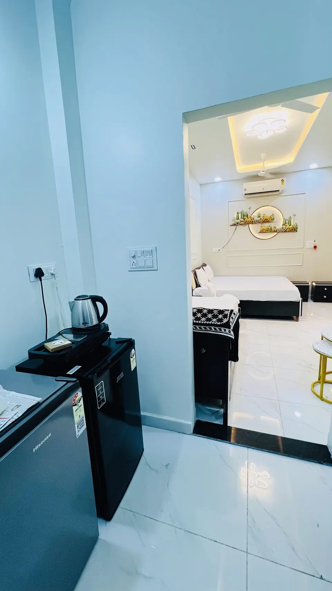

Harsiddhi Temple Ujjain: Shaktipeeth Guide and Evening Deepmala

Harsiddhi Mata Temple in Ujjain is a Shaktipeeth, a sacred seat of the Goddess, where tradition says Sati's elbow fell. It stands roughly 600 m to 1 km from Mahakaleshwar (sources differ), and its two tall lamp pillars, the Deep Stambh, are lit around the evening aarti at about 7:00 PM. Most families visit on foot before or after Mahakal darshan and spend about an hour.
When we welcome pilgrim families, we often hear, "We only planned Mahakal, is there anything else we should not miss?" Our answer is nearly always Harsiddhi Mata. It is a small, busy, very alive temple, and the evening lamps are something your parents and children will remember. With warmth and humility, here is what we have learnt from sending guests there for years.
What Harsiddhi Mata Temple is, and why it is a Shaktipeeth
Harsiddhi is worshipped here as a form of Durga, and in some traditions as Annapurna. MP Tourism describes the temple as one of the most ancient in Ujjain and one of two revered Shakti Peethas in Madhya Pradesh. Its sanctum holds a Sri Yantra, and smaller shrines honour Goddess Annapurna, Mahalakshmi and Mahasaraswati (MP Tourism).
The Shaktipeeth legend
The story comes from the Shiva Purana. After Sati's death, Shiva carried her body across the universe in grief. Vishnu then cut the body into 51 pieces with his Sudarshan Chakra, and every place where a piece fell became a Shakti Peetha. At Ujjain, tradition says it was Sati's elbow that fell (MP Tourism; Ujjain Darshan). The exact number of Shaktipeeths and their locations differ between texts and traditions, so treat the list as devotion, not arithmetic.
King Vikramaditya and the kuldevi
Popular legend says King Vikramaditya built the original temple, and that Harsiddhi was his kuldevi (family deity). The lore adds that he offered his head to her eleven times and she restored him each time. This is tradition, not documented history, and we share it as the family stories pilgrims tell here. The present building is modest in size and shows Maratha influence in its carving and style (MP Tourism).
The Deepmala: Ujjain's pillars of light
The first thing most visitors photograph is the pair of black lamp towers, the Deep Stambh, with small oil-lamp cups jutting out of them in tiers. A deepmala simply means a garland of lamps. When the lamps are lit at dusk, the two towers glow from base to tip.

How many lamps?
Sources disagree, so we will not give you one confident number. MP Tourism says the two pillars hold 726 lamp holders, all lit during Navratri. Ujjain Darshan says there are over 1,000 lamp holders, on pillars about 51 feet tall with 13 tiers, and that devotees climb them to pour oil and light every wick before the 7:00 PM aarti (Ujjain Darshan). We have not counted them ourselves.
What we can say honestly: the lamps are most certain on festival evenings, especially Navratri. On an ordinary evening, ask at the temple or your caretaker on the day whether the pillars are being lit, and do not build your whole plan around it.

The best time to see them
Both MP Tourism and Ujjain Darshan give the evening aarti as 7:00 PM. If the lamps are being lit, the effort happens just before it, so Ujjain Darshan suggests reaching by about 6:15 PM for a good viewing spot. With elders or small children, we would arrive even a little earlier and stand toward the side, where the crowd is lighter.
Timings, aarti and distance
Here is what the sources say, and where they differ:
- Opening hours: MP Tourism lists 5:00 AM to 7:00 PM daily; Ujjain Darshan lists 5:00 AM to 10:00 PM. Please check on the day.
- Morning aarti: about 7:00 AM (MP Tourism gives 7:00 to 8:00 AM).
- Evening aarti: about 7:00 PM. Some listings give a different slot, so confirm locally.
- Entry: Ujjain Darshan notes that entry is free.
- Distance from Mahakaleshwar: MP Tourism says about 600 m; Ujjain Darshan says about 1 km, 5 to 10 minutes on foot. Our own shared fact is that all five AP Villas are within 2 km of Mahakaleshwar Jyotirlinga.
- Railway station: Ujjain Junction is about 2.5 km away (MP Tourism).
Because Harsiddhi is so close to Mahakal, it fits easily into the day you already plan. If you are building your Mahakal timing around the aarti schedule, our Mahakaleshwar darshan timings guide will help.
Inside the complex: what to look for
MP Tourism notes that the complex has four grand entrances, one facing each direction. Inside, devotees queue for darshan of Harsiddhi, and offerings of flowers, coconut and sweets are common.

Take a slow walk around the courtyard after darshan. The tree in the photo above, with threads tied round its trunk, is the kind of quiet corner where families pause. Ask the priests or shopkeepers there about local customs rather than relying on guesses from us.
Etiquette and what to carry
- Dress modestly and be ready to remove footwear outside.
- Carry a small bag; large bags and phones may be restricted at some temples, so check at the gate.
- Keep small change for offerings and a water bottle for elders.
- Watch your footing near the pillars, where oil can make the ground slippery.
Navratri and festival days
Navratri is the temple's main festival. MP Tourism says the temple is illuminated and pilgrims come from across the country, and Ujjain Darshan notes large crowds in both Chaitra and Sharad Navratri. If you want the full lamp spectacle, that is the time, but plan for queues and book your stay early. Our Navratri in Ujjain guide covers dates, garba and darshan planning.
Pairing Harsiddhi with the rest of your Ujjain day
A comfortable family rhythm is: Mahakal darshan in the morning, rest and lunch at the villa, then walk to Harsiddhi for the 7:00 PM aarti, and a short stroll to Ram Ghat on the Kshipra (Ujjain Darshan describes it as a short walk away). If you are also visiting Kal Bhairav, read our Kal Bhairav temple guide. For rides and day trips, see our travel page.
Where to stay near Harsiddhi Mata and Mahakaleshwar
All five AP Villas are within 2 km of Mahakaleshwar Jyotirlinga, about 6 minutes by car or 12 minutes on foot, and in-house guests get a complimentary Mahakal shuttle (up to 5 guests per trip). That makes an evening at Harsiddhi and an early return to a quiet kitchen very easy.
Rudrangan Suites: our newest villa



Rudrangan Suites opened in 2026, with designer finishes and garden seating. It has 3 bedrooms and sleeps 6, from ₹5,200 per night. A lift is available and the villa is wheelchair friendly, which helps if your parents find the temple steps tiring. Pets are welcome, and the kitchen has an induction cooktop and microwave so you can cook simple meals at home. Check-in is at 10:30 AM, and check-out is at 9:30 AM.
For larger or different groups:
- Divinestay: 3 bedrooms, sleeps 8, from ₹5,500, with a private rooftop, for three generations together.
- Om Shanti Stay: 2 bedrooms, sleeps 6, from ₹4,500, for families with children.
- AP Suite: 2 bedrooms, sleeps 4, from ₹4,200, for couples and small families.
If you also plan a Bhasma Aarti at Mahakal, our caretaker explains the booking process on your arrival evening, and the shuttle drops you at the temple gate by 3:30 AM for the 4 AM aarti. The help is complimentary; the temple permit is booked by you. See all our villas or write to us through the contact page.
Frequently asked questions
Where is Harsiddhi Mata Temple and how far is it from Mahakaleshwar?
Harsiddhi Mata Temple is in the old city of Ujjain, close to Mahakaleshwar. MP Tourism gives the distance as about 600 m, while Ujjain Darshan says about 1 km, or 5 to 10 minutes on foot. Most families walk it or take a short auto. Our complimentary shuttle goes to Mahakaleshwar.
Why is Harsiddhi Temple called a Shaktipeeth?
According to the Shiva Purana as retold by MP Tourism, Vishnu divided Sati's body into 51 pieces and each place where one fell became a Shakti Peetha. Tradition says Sati's elbow fell at Ujjain, which is why Harsiddhi is revered as a Shaktipeeth. Counts and locations vary between traditions.
What time is the evening aarti and the lamp lighting?
MP Tourism and Ujjain Darshan both give the evening aarti as about 7:00 PM. Ujjain Darshan says the lamp pillars are lit just before it, while MP Tourism mentions all the lamps being lit during Navratri. Reach by 6:15 PM and confirm locally on the day.
How many lamps are on the Deep Stambh?
Sources differ. MP Tourism says the two pillars hold 726 lamp holders, all lit during Navratri, while Ujjain Darshan says over 1,000. We have not counted them ourselves, so we do not quote one figure as certain. Please treat both as approximate and ask at the temple.
Is Harsiddhi Temple suitable for elderly parents?
Yes, with planning. The temple is compact and close to Mahakal, but the evening aarti gets crowded and floors near the lamp pillars can be slippery. Go a little before 6:15 PM, stay near the edge, and keep a short ride booked. Our Rudrangan Suites has a lift and is wheelchair friendly.
Sources
- MP Tourism: Harsiddhi Temple, Shakti Peetha in Ujjain
- Ujjain Darshan: Harsiddhi Temple
- Wikimedia Commons: Harsiddhi Temple, Ujjain 01 (Bernard Gagnon)
- Wikimedia Commons: Deep Jyoti Stambh, Ujjain (Bernard Gagnon)
Timings, prices and dates change, especially on festival days. Please verify before you travel with the official temple or government site.
— Apoorv, Founder, AP Villas & Resorts